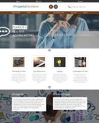
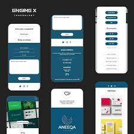

SERVIÇOS PRESTADOS POR NOSSA EMPRESA
MODELO DE SITE PADRÃO

No modelo padrão, teremos apenas a utilizaçao de HTML e CSS. Nele o cliente pode fazer toda a seleção de layout,
paleta de cores
seleção de posicionamentos, além de ter a opção de escolha de pacotes: 1 página, 4 páginas e 6 ou mais páginas,
por pacote.
Durante o processo de criação, o cliente poderá saber o andamento de todo o processo, além de mostrar como está
ficando
recebendo palpites de melhorias.
Os Modelos Padrão, pode levar de 7 a 10 dias dependendo da demanda e pedido de páginas,
mas podendo surpreender
com a rápida entrega do projeto.
MODELO DE SITE PERSONALIZADO

No modelo personalizado, teremos de utilizaçao de HTML, CSS e demais tecnologias. Nele o cliente pode fazer toda a seleção de layout,
paleta de cores
seleção de posicionamentos, além de ter a opção de escolha de pacotes: 1 página, 4 páginas e 6 ou mais páginas,
por pacote.
Durante o processo de criação, o cliente poderá saber o andamento de todo o processo, além de mostrar como está
ficando
recebendo palpites de melhorias.
Os Modelos Personalizados, pode levar de 15 a 30 dias dependendo da demanda e pedido de páginas,
mas podendo surpreender
com a rápida entrega do projeto.